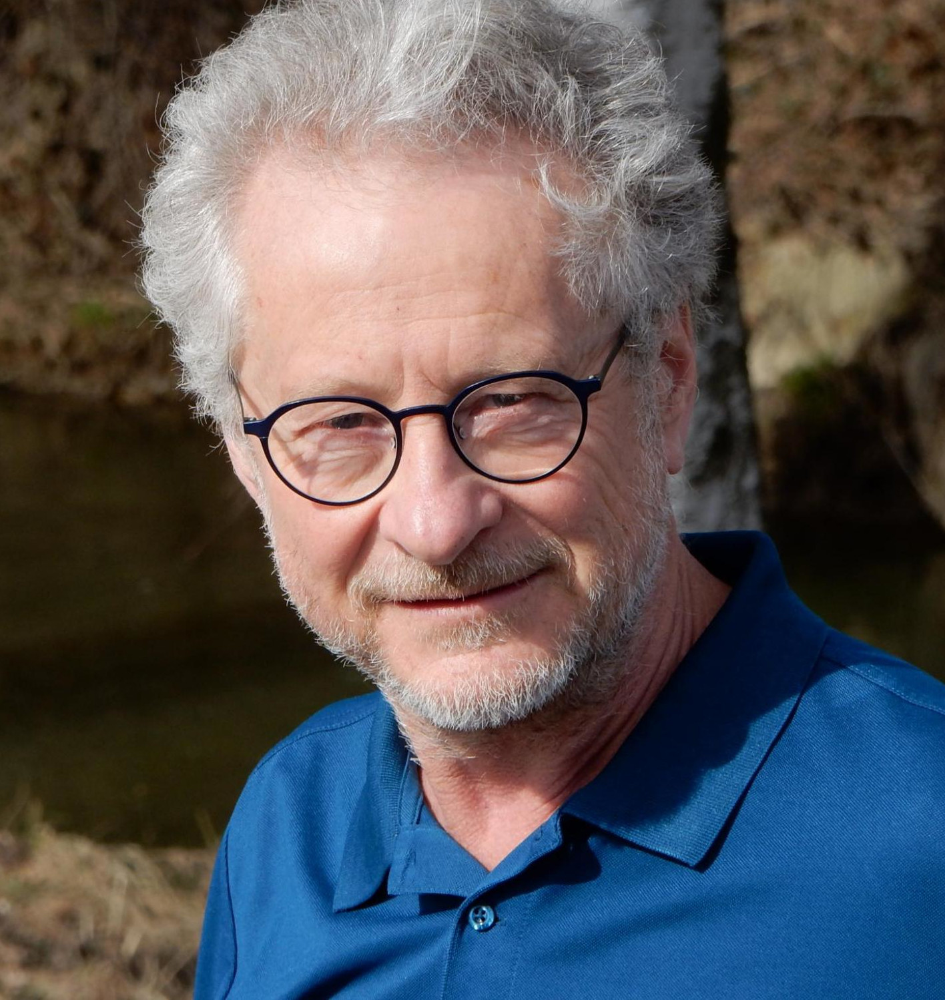

Geboren 1958 in Wien und dort aufgewachsen. Landwirtschaftsausbildung Verschiedene Berufe, u.a. Landwirtschaftlicher Adjunkt, Lehrer, Leiter eines Obdachlosenhauses, Umweltberater. Lebt im niederösterreichischen Waldviertel. 2003 Gründung der „schreibwerkstatt langschlag wurzelhof“ zusammen mit Robert Schindel. 2008 – 2012 und 2014 Referent bei der Schreibakademie Waidhofen an der Thaya und Schreibakademie Gmünd, Kreativakademie des Landes NÖ 2010 Organisation der ersten grenzüberschreitende Schreibwerkstatt in Nové Hrady mit Studentinnen und Studenten beider Länder. Leitet Schreibwerkstätten in Schulen und in der Tagesstätte Zuversicht, Heidenreichstein.
Mitglied der Grazer Autorinnen Autorenversammlung